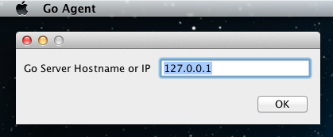

Installing Go agent
Introduction
Installation
Windows
You must be logged in as a user with Admin privileges to install the Go agent on Windows.
- Double-click the go-agent-${version}.exe installer file and follow the prompts to install Go.
- During installation you will be asked to select a root path for your Go agent. In addition to holding your agent installation, this directory will contain the source code your agent checks out for every build.
- You will next be prompted to choose the bundled Oracle JRE 7 or specify the location of JRE (or JDK) installed on your system
-
After installing the files, the installer will prompt you for the hostname or IP address of the Go server. If you leave this blank it will default to the local machine.
- At the end of the installation, Go agent registers itself as a windows service and starts running automatically.
Silent Installation
<agent installer> /S /SERVERIP=<ip of go server> /GO_AGENT_JAVA_HOME=<path to JRE> /D=<directory where you want agent to be installed>
- SERVERIP is optional. Default value is localhost (127.0.0.1)
- GO_AGENT_JAVA_HOME is optional. Default is the packaged JRE 7
- Installation-Directory is optional. Default value is C:\Program Files (x86)\Go Agent
- For example, C:\>go-agent-12.3.0-2000-setup.exe /S /SERVERIP=10.10.10.10 /D=C:\go\agent
If User Access Control feature is enabled on your Windows system, it needs to be turned off for silent installation to work
If you are using the silent installation to upgrade an agent, you should not specify the Installation-Directory option.
Override default startup arguments
- Create a file named wrapper-properties.conf inside the config directory
- With reference to the representation above, if you wish to override wrapper.java.additional.2,
- Copy the property from wrapper-agent.conf to wrapper-properties.conf
- Change the value associated to wrapper.java.additional.2 to the desired value
- Adding a new property entails:
- Increment the x by 1 in wrapper.java.additional.x where x is the highest number in wrapper-agent.conf and wrapper-properties.conf combined
- Add this newly created property to the wrapper-properties.conf
Mac OSX
- Double-click the downloaded file to unzip the contents.
- Drag the Go Agent.app icon to the Applications folder. This will also be the directory where the agent checks out and builds the code.
- Double-click on the Go Agent.app icon to open the launcher.
-
The very first time you run the Go agent on your machine you will be prompted for the hostname or IP address of your Go server. By default it will try connecting to the local machine. Click the OK button to continue.

On OSX 10.8.x (Mountain Lion), you may get the following error. "Go Agent" is damaged and can't be opened. You should move it to the Trash. This is due to enanced security protections. To allow the install to proceed
Linux
You must be logged in as root, or use sudo, to install Go on Linux. Go agent also requires that the Oracle or Open JRE or JDK - version 6 or above - is installed.
The installer will create a user called go if one does not exist on the machine. The home directory will be set to /var/go. If you want to create your own go user, make sure you do it before you install the Go agent.
RPM based distributions (ie RedHat)
The Go agent RPM installer has been tested on RedHat Enterprise Linux and CentOS. It should work on most RPM based Linux distributions.
- Run rpm -i go-agent-${version}.noarch.rpm to install Go agent.
Debian based distributions (ie Ubuntu)
The Go agent .deb installer has been tested on Ubuntu. However it should work on most Linux distributions which use debs.
- Run dpkg -i go-agent-${version}.deb to install Go agent.
The following command could be used after installation:
- Check Go agents' status with command sudo /etc/init.d/go-agent status
- Start Go agents with command sudo /etc/init.d/go-agent start
- Stop Go agents with command sudo /etc/init.d/go-agent stop
Once the package has been installed you need to configure the hostname or IP address of your Go server and start the agent. To do this, do the following:
- Open /etc/default/go-agent in your favourite text editor.
- Change the line GO_SERVER=127.0.0.1 to list the hostname or IP address of your Go server.
- Save the file and exit your editor.
- Run /etc/init.d/go-agent start to start the agent.
Solaris
You must be logged in as root, or use sudo or pfexec, to install Go on Solaris. Go agent also requires that Oracle or Open JRE or JDK - version 6 or above - is installed.
The installer will create a user called go if one does not exist on the machine. The home directory will be set to /var/go. If you want to create your own go user, make sure you do it before you install the Go agent.
- Uncompress the package with the command gzip -d go-agent-${version}-solaris.gz
- Install the package with the command pkgadd -d go-agent-${version}-solaris
- By default the agent will try connecting to localhost as the server. To change this, run the following:
svccfg -s svc:/application/go/agent:default setprop go-agent/server = <Server hostname or IP> svcadm refresh svc:/application/go/agent svcadm restart svc:/application/go/agent
The following command could be used after installation:
- Check Go agents' status with command svcs go/agent
- Start Go agents with command svcadm enable -s go/agent
- Stop Go agents with command svcadm disable -s go/agent
Location of files after installing Go agent
Windows
All the files for the Go agent are under its root installation folder in Windows, the default location is C:\Program Files\Go Agent.
Linux
/var/lib/go-agent #contains the binaries /usr/share/go-agent #contains the start script /var/log/go-agent #contains the agent logs /etc/default/go-agent #contains all the environment variables with default values. These variable values can be changed as per requirement
Mac OSX
Some files for the Go agent are under its root installation folder in Mac OSX.
/Applications/Go Agent.app
~/Library/Preferences/com.thoughtworks.studios.cruise.agent.properties
Some logging information is also written to /var/log/system.log
Solaris
/var/lib/go-agent #contains the binaries /usr/share/go-agent #contains the start script /var/log/go-agent #contains the server logs
Registering your agent with the server
For security reasons, all newly installed Go agents need to be enabled on the Go server before work is assigned to them. This prevents an unauthorized person from getting access to your source code. To enable a newly installed Go agent, do the following:
- Open the Go server dashboard
- Follow the instructions here to find the agent you've just installed on the list and add the agent to your cloud. The Go server will now schedule work for this agent.